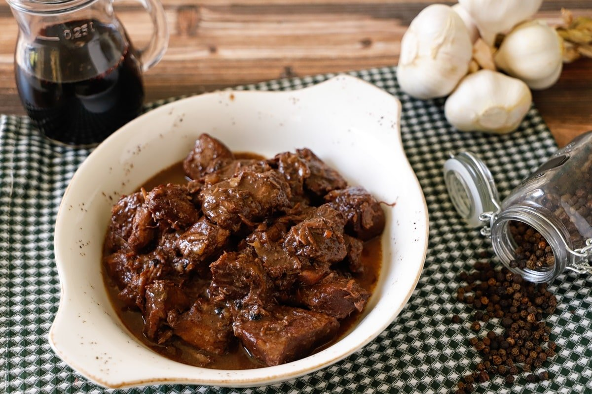

Peposo (Peppery)

Description
Peposo is a Tuscan recipe, similar to a stew. The meat is cooked in wine, from whom it will take on a dark color and will be much spicier thanks to the addition of black pepper.
Ingredients
- Priest's hat (1400 g)
- Red wine (500 g)
- Black peppercorns (to taste)
- Garlic (4 cloves)
- Extra virgin olive oil (to taste)
Steps
- Place the peppercorns in a gauze and make a little package by closing it with string
- Now move on to the meat, first cut it into slices about 3 cm thick and then into 4cm long strips (Do not trim the fat from the meat, unless it is excessive)
- Place a pan, preferably cast iron, on the heat, add the meat, the peeled garlic cloves and the gauze with the pepper: Mix
- Cook the meat for at least 10 minutes
- Then pour in the red wine and cover with the lid: Leave to cook on low heat for 2 hours
- Then remove the lid and season with salt, mix and leave to cook for another 2 hours on a low flame, stirring occasionally
- When the sauce has reduced, remove the gauze with the pepper, taste the meat to check if it is cooked, if necessary add salt and serve